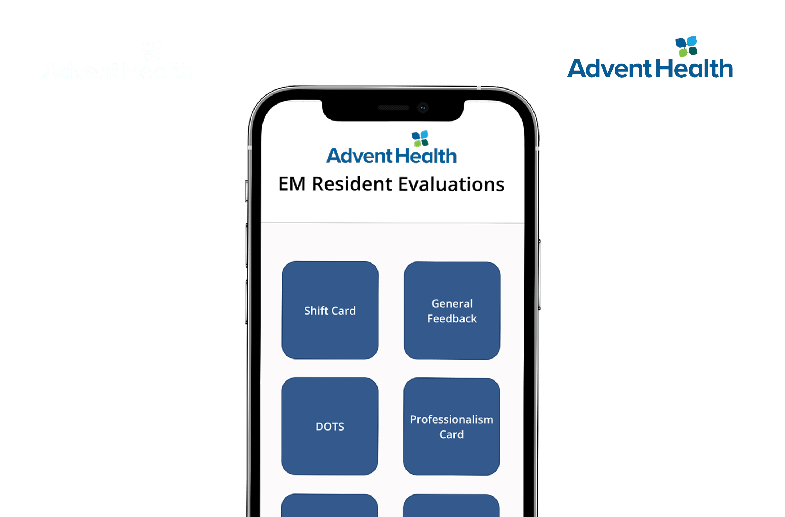

Duplicate Medical Records
Understanding how duplicate patient records influence emergency clinicians' information behavior.

My research investigates how patients and clinicians interact with medical records, healthcare technologies, and digital health systems.
Using mixed-methods and human-centered research approaches, I examine how healthcare technologies can be designed to better support patient care.
Understanding how duplicate patient records influence emergency clinicians' information behavior.
Exploring how chronically ill patients interpret and engage with information in their records.

Enhancing resident evaluation through healthcare technology design.